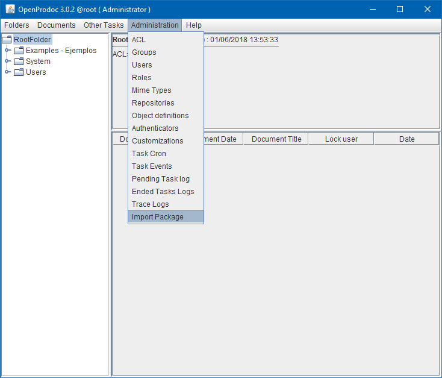
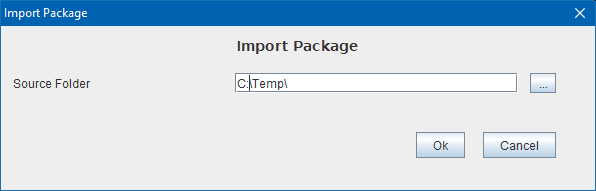

Before starting the installation of Software Management fo OpenProdoc (SMO), please review the Before Install requirements. Remember that SMO is an extension of OpenProdoc, so it requires an installation of OpenProdoc running.
If you plan to use SMO in a portable environment, there is a SMO + OpenProdoc portable version available in the OpenProdoc site, ready for downloading, unziping and start, without any additional operation.
If you plan to install SMO in a preinstalled/running environment of OpenProdoc, you must download and unzip the package and then there are three steps:
SMO uses a set of document definitions, thesaurus and some mimetypes that will be imported to your current system. Altough it's difficult, some definitions of folder types or names/codes of thesaurus can exist in your environments, but with different values. If the elements already exists in your environment, the installation could fail or change the expected behaviour.
Besides the definitions and thesarurus, SMO installation includes some predefined providers and product versions, as well as some examples based in OpenProdoc. After the installation, you can delete or update any of them.
The objects included in the standard SMO definition are:
Before starting the installation, review the existing definitions in your environment, and if any of them exist, the recommended operation is:
For importing the SMO Package you should select the target folder in OpenProdoc and then select the menu "Administration -> Import Package"

Then you must select the computer folder where you unzip the SMO package.

Using the options or tools available in the selected J2EE application server, deploy SMO application (war). After deploying the application, you must verify the existence of a file named SoftManProdoc.properties that should be in the home folder of the user running the J2EE server, in a folder conf parent of the running forlder for the J2EE server or referencec by the environment variable SoftManOPDWeb ( Ej.: SoftManOPDWeb=/OPD/SMO/SoftManProdoc.properties )
The content of the file should be just one line referencing the OpenProdoc running configuration, or a copy of it. ( Ej:OPDConfig=c:/OPD/SMO/Prodoc.properties )
Finally, you must copy the jar of the jdbc driver for the database used in the aplication folder WEB-INF/lib and you can start the application and connect using the same users defined in OpenProdoc installation.
Main Win Help contains a global description of this extension for OpenProdoc.
In SMO Tree there is a complete view of operations and forms.